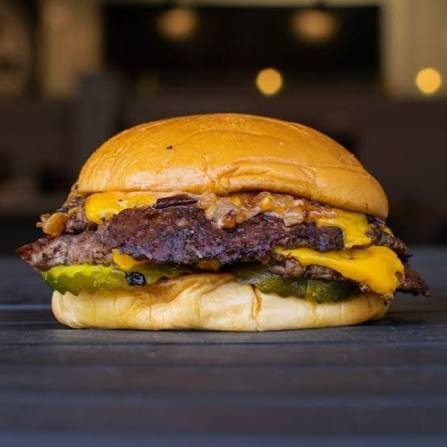

Home
Cheeseburger

This homemade cheeseburger features a juicy, perfectly seasoned beef patty topped with melted cheese and your favorite fresh toppings, all served on a toasted bun. It's a quick, satisfying meal that's easy to customize with different cheeses, sauces, and toppings to suit your taste.
Ingredients:
- 1.5 lb ground beef (80/20)
- 1 tsp salt
- 0.5 tsp black pepper
- 4 slices American cheese
- 1 head of lettuce
- 1 tomato, sliced
- 1 onion, sliced
Steps:
- Prepare the patties. Divide the ground beef into 4 equal portions. Gently shape each into a patty about 2cm thick. Press a shallow indentation into the center of each patty to help it cook evenly. Season both sides with salt, pepper, and garlic powder.
- Toast the buns. Spread a little butter on the cut sides of the buns. Toast them in a skillet or on the grill for 1-2 minutes until lightly golden. Set aside.
- Cook the burgers. Heat a skillet over medium-high heat until hot. Place the patties on the cooking surface. Cook for about 3-4 minutes on each side. During the last minute of cooking, place a slice of cheese on each patty and cover briefly so the cheese melts.
- Assemble the burgers. Remove the patties from the skillet, placing each on a bottom bun. Add your toppings, then cover with top bun. Enjoy!